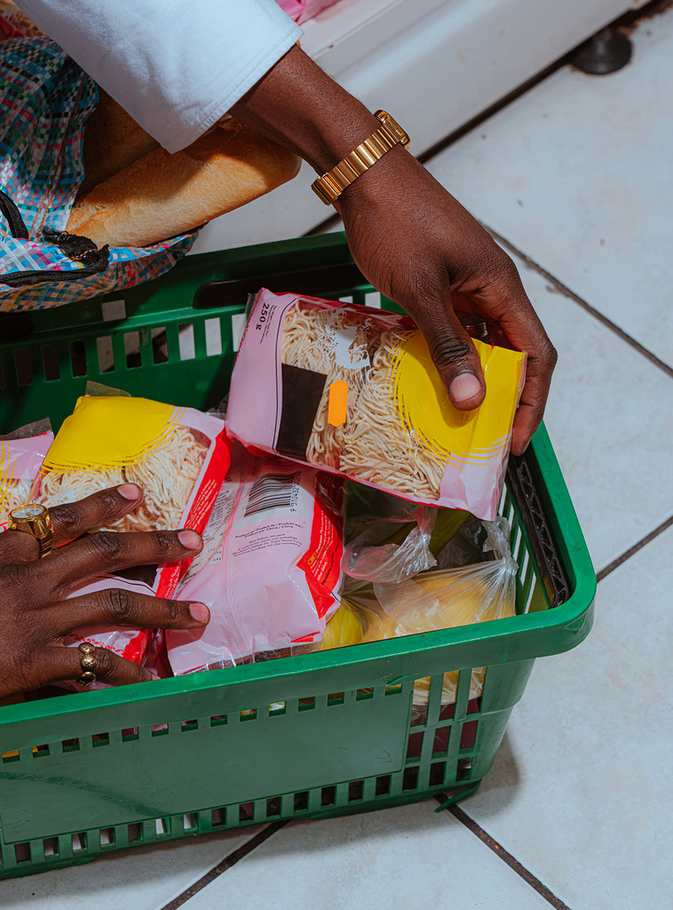
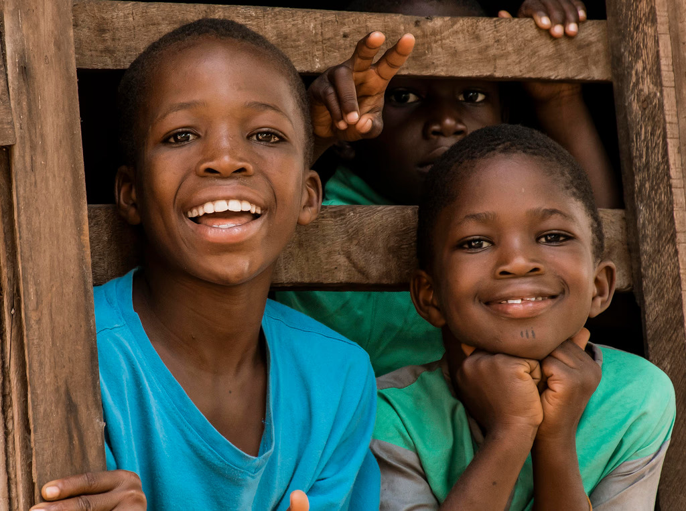

QUI NOUS SOMMES
"Chaque jour, dans le silence des rues de Cotonou, des cris de détresse s'élèvent. Nous existons pour y répondre."
NOTRE ENGAGEMENT
The Refuge est né de la conviction profonde que la foi chrétienne doit se traduire en actes visibles d'amour et de compassion. Nous n'apportons pas seulement du pain physique, mais aussi de l'écoute, du respect et l'espérance en une vie restaurée.
"Car j'ai eu faim, et vous m'avez donné à manger; j'ai eu soif, et vous m'avez donné à boire; j'étais étranger, et vous m'avez recueilli; j'étais nu, et vous m'avez vêtu..."
Matthieu 25:35-36
NOTRE VISION POUR COTONOU
Nous travaillons pour voir une ville où l'isolement et la faim reculent. Des marchés bondés de Dantokpa aux ruelles d'Abomey-Calavi, nous voulons bâtir un réseau de solidarité chrétienne actif, capable de repérer et de relever les personnes tombées dans la grande précarité.
Notre but à long terme est d'accompagner chaque bénéficiaire vers une autonomie complète, en restaurant non seulement son corps, mais aussi sa dignité sociale et spirituelle.

NOS VALEURS PILLIERS
Chaque personne, peu importe son parcours ou son état actuel, est créée à l'image de Dieu et mérite un respect absolu et une écoute attentive.
Notre spiritualité ne s'arrête pas aux mots. Elle se manifeste par une présence concrète et des actions quotidiennes sur le terrain.
Au-delà des besoins physiques, l'isolement est le plus grand fléau. Nous offrons une oreille attentive, sans aucun jugement, comme des frères.
Nous gérons chaque ressource et chaque don avec une rigueur absolue, en rendant régulièrement compte à nos donateurs et partenaires.
Nous croyons qu'aucune situation n'est désespérée. Avec de l'aide et la grâce de Dieu, la reconstruction d'une vie est toujours possible.
NOTRE SÉCURITÉ EN DIEU
"Si l'Éternel ne bâtit la maison, ceux qui la bâtissent travaillent en vain."
Psaume 127:1Nous reconnaissons humblement notre totale dépendance à la providence divine. Ce projet n'est pas le nôtre, c'est celui du Christ pour Cotonou. C'est Lui qui touche les cœurs et qui pourvoit à chaque repas.
Rejoindre la mission maintenant